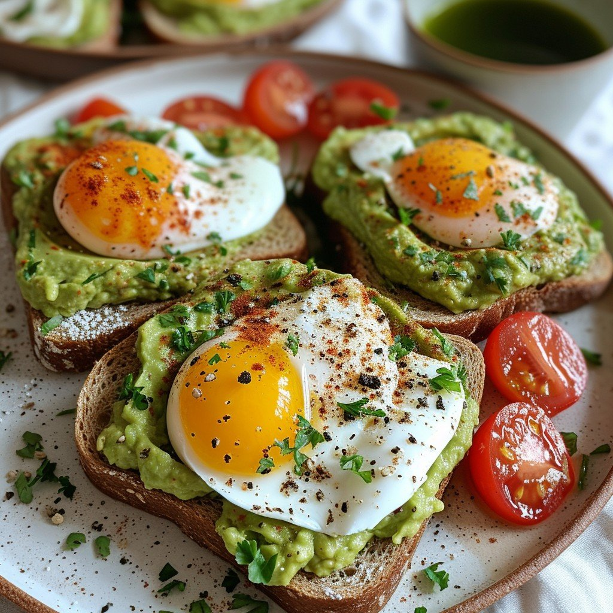

Avocado Toast Recipe
Home

Photo by Stockcake
Description
My go-to lunch fix whenever I'm working from home. This truly is the best avocado toast you'll ever have. If you like an added protein boost, top with scrambled, boiled eggs, or any protein you feel like having (sometimes I do fried soft tofu).
Make sure that you make this when you're ready to eat it - as avocado won't stay good for long after its skin and seed are removed.
If you want to help prolong the life of your avocado mash, add a squeeze or two of fresh lemon juice, and eat within a day!
Ingredients
- 1 slice sourdough bread, toasted
- 1/2 ripe avocado, smashed
- 1/3 cup cottage cheese
- 1 tablespoon sunflower nuts and/or roasted pumpkin seeds
- 1/2 teaspoon honey
- 1/8 teaspoon crushed red pepper flakes
- salt and freshly ground black pepper to taste
Steps
- Assemble the avocado toast by smashing and smearing the avocado onto the toast.
- Top with cottage cheese, then sprinkle with nuts/seeds, crushed red pepper flakes, salt and pepper to taste, and a drizzle of honey. Serve immediately.